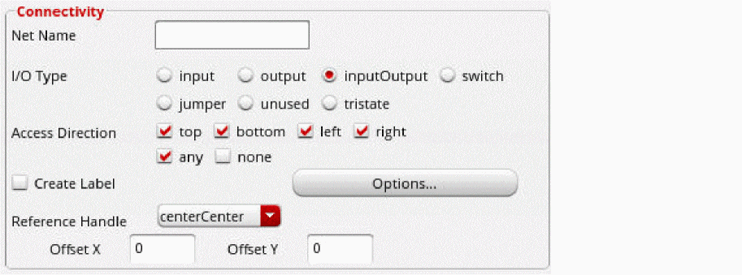

Defining Connectivity for the Master Path
You can choose to associate the master path with a net, and you can designate the master path as a pin.
Before you define the connectivity for a master path, ensure you have completed the procedure described in Defining the Master Path of an MPP.
To define connectivity for a master path, do one of the following in the Create Multipart Path form:
- To assign the master path to a net, do the following:
-
To assign the master path to a pin, do the following:
-
From Connectivity, choose Pin.
The form expands to show the net and pin connectivity fields in the Connectivity section. -
In Net Name, type the name of the net.
When you choose Pin, you must enter a net name or the system beeps when you click in the cellview window to begin creating the MPP. - For I/O Type, choose one of the following: input, output, inputOutput, switch, or jumper.
- For Access Direction, choose the parts of the pin to which routing can be connected. For example, top, bottom, left, and right.
-
Select Create Label if you want to create a text-display object to display the net name for the pin.
If pin names are not visible in the cellview, turn on Pin Names in the Display Options form. -
For Reference Handle, choose where you want to align the pin name in relation to the master path or subpart.
You can offset the pin name from the object in the direction of the X and/or Y axis. - For Offset X, type a positive or negative floating-point number to offset the origin point of the pin name along the X axis from the point specified by Reference Handle.
- For Offset Y, type a positive or negative floating-point number to offset the origin point of the pin name along the Y axis from the point specified by Reference Handle.
-
Use the Options button if you want to set pin name display options, such as font, height, layer, and justification on the Set Pin Label Text Style form.
The system uses the values of the following fields to calculate the position of the text-display object: Reference Handle, Offset X, Offset Y, and of the Justification field on the Set Pin Label Text Style form.
-
From Connectivity, choose Pin.
The changes you make to the Create Multipart Path form immediately affect the master path in the layout window.
For information about the overall steps involved in creating an MPP, see Flow for Creating Multipart Paths.
Related Topics
Return to top